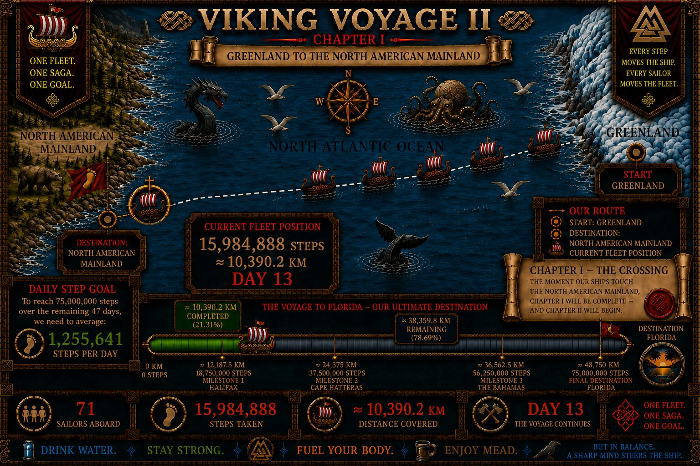

THE VOYAGE ARCHIVE · THE CAPTAIN'S LOG
DAY 13
The storm had passed. Hugin returned, but Munin remained missing.

CAPTAIN'S LOG · DAY 13
THE SILENCE AFTER THE STORM.
Seventy-one Vikings emerged from the storm together. Their combined total reached 15,984,888 steps — approximately 10,390.2 kilometres from Greenland.
The sea fell quiet. Hugin returned above the fleet, but the sky beside him remained empty. Munin had not come home.
THE STORM HAS PASSED.
THE MYSTERY HAS NOT.
— Captain Hákon
DAY 13 RECORD
THE CREW EMERGES
The day's preserved record follows the fleet out of the storm. Crew Honors added Harald, Brand and Hall to the Ship's Roll while the search for Munin continued.